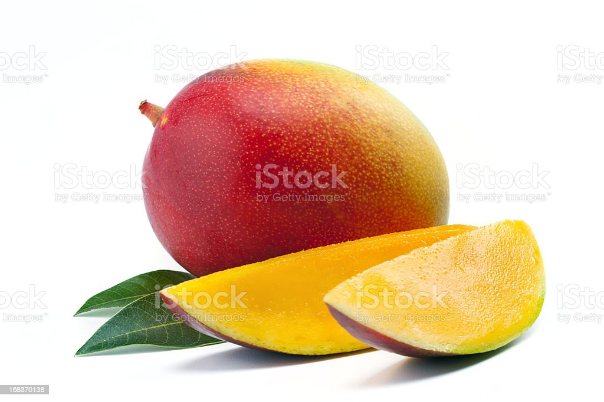

<!DOCTYPE html>
<html>
    <head>
        <title>First CSS</title>
        <link rel="stylesheet" type="text/css" href="style.css">
        <style>
            p:first-child i {
              background: yellow;
            }
            </style>
    </head>
    <body>
    <!-- <h1>
    CSS style tag selector example.
    </h1>
    <h2>
    CSS style multiple selector example.
    </h2>
    <h3>
    CSS style multiple selector example.
    </h3>
    <p class="p1">
    CSS style id selector example.
    </p> 
         This is CSS background image example.
         <h1>
            This is coming from h1 header.
            </h1>
            This is coming from body.
            <p>
            This is coming from p tag. 
            </p> 
         <h1>
                Coming from a heading perspective
                </h1>
                Coming from a topic explanation perspective    
        <a href="https://en.wikipedia.org/wiki/Bangalore" class="link">Click to know more about Bangalore</a> 
        <div>
            Box model example
            </div> 
         <p class="one">Thick red border</p>
            <p class="two">Thin green border</p>
            <p class="three">Each border is different</p>
        <p> Margin example </p>
        <p>
            Padding demonstration :
            Java is a high-level, class-based, object-oriented programming language that is designed to
            have as few implementation dependencies as possible. It is a general-purpose programming
            language intended to let programmers write once, run anywhere (WORA),[17] meaning that
            compiled Java code can run on all platforms that support Java without the need to recompile.
            </p> 
            
            <h1>CSS float</h1>
            <p>
            Dudh Sagar Falls is a waterfall on the Sharavati river located in the Western Ghats running between
            Uttara Kannada and Shimoga districts of Karnataka, India. It is the third highest plunge waterfall in
            India. It is a segmented waterfall which depends on rain and season to become a plunge waterfall.
            The falls are major attractions for tourists and is ranked 36th in the list of free-falling waterfalls,
            490th in the world by list of waterfalls by total height, 128th in the list of single-drop waterfalls in
            the World by the waterfall database.
            </p> -->     
            <!-- <p>CSS is way to decorate <i>HTML pages</i> CSS is way to decorate <i>HTML pages</i></p>
            <p>CSS is way to decorate <i>HTML pages</i> CSS is way to decorate <i>HTML pages</i></p> -->
            <!-- <p>Delhi,[a] officially the National Capital Territory (NCT) of Delhi, is a city and a union
                territory of India containing New Delhi, the capital of India. Straddling the Yamuna river, primarily
                its western or right bank, Delhi shares borders with the state of Uttar Pradesh in the east and with
                the state of Haryana in the remaining directions.</p> -->
                <!-- <h1>Travel advisor</h1>
                <ul>
                <li><a href="#">Home</a></li>
                <li><a href="#">Saudi Arabia</a></li>
                <li><a href="#">India</a></li>
                <li><a href="#UK">United Kingdom</a></li>
                <li><a href="#USA">United States of America</a></li>
                </ul> -->
                <!-- <h1> Fruits </h1>
                <div class="img">
                <a href="https://en.wikipedia.org/wiki/Apple"></a>
                <div class="desc">An apple is a round, edible fruit produced by an apple tree (Malus domestica). Apple trees are cultivated worldwide and are the most widely grown species in the genus Malus. The tree originated in Central Asia, where its wild ancestor, Malus sieversii, is still found.</br></div>
                </div>
                <div class="img">
                <a href="https://en.wikipedia.org/wiki/Mango"></a>
                <div class="desc">A mango is an edible stone fruit produced by the tropical tree Mangifera indica. It is believed to have originated in southern Asia, particularly in eastern India, Bangladesh, and the Andaman Islands.[1]  </br>
                <li>Malgoba</li></br>
                <li>Raspuri</li></br>
                <li>Alphonso </li></div>
                </div>
                <div class="img">
                <a href="https://en.wikipedia.org/wiki/Lychee"></a>
                <div class="desc">It is a tropical tree native to South China, Malaysia, and northern Vietnam.[4][5] The tree has been introduced throughout Southeast Asia and South Asia.[5] Cultivation in China is documented from the 11th century.[4] </br>
                </div>
                </div> -->
                <!-- <h2>Welcome to RockingKart!!</h2>
                <h3>Login</h3>
                <form name="input" action="" method="get">
                Username:<input type="text" name="Name" value="Arham" size="24">
                Passsword:<input type="password" value="*********" size="20">
                <input class="id" type="button" value="Submit">
                </form> -->
                <!-- <h1> BANGALORE </h1>
                <p>
                    Bangalore, officially Bengaluru , is the capital and largest city of the southern Indian state of Karnataka. 
                    It has a population of more than 8 million and a metropolitan population of around 11 million, 
                    making it India's third most populous city and fifth most populous urban agglomeration, 
                    as well as South India's second-largest urban agglomeration, and the 27th largest city in the world.
                </p> -->
<!--                
                <h1>Gradient example</h1>
                <div id="grad1"></div> -->


        </body>
</html>